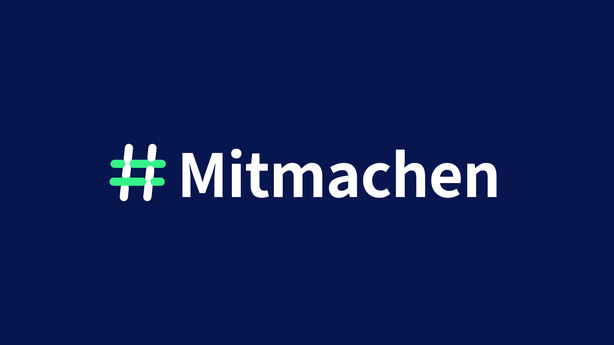

Linkes Navy-Band
Es legt die erste tragende Achse von oben nach unten frei.
Vom Zeichen zur Bewegung
Das Flechtwerk wird nicht einfach eingeblendet: Seine vier Bänder kommen aus unterschiedlichen Richtungen, greifen ineinander und stehen anschließend ruhig als gemeinsames Zeichen.
01 · Choreografie
Die Richtung jedes Bandes ist fest mit der Marke verbunden. Kein Bounce, keine Rotation, kein Glow: Nur die Flechtlogik wird sichtbar gemacht. Diese Reihenfolge bleibt in Website, GIF und Video identisch.
Es legt die erste tragende Achse von oben nach unten frei.
Der erste Beitrag kommt sichtbar von links in das Flechtwerk.
Die zweite Achse entsteht bewusst in Gegenrichtung von unten.
Das letzte Band schließt das Zeichen von rechts nach links.
Mitmachen folgt als professionell gesetzte Einheit und konkurriert nicht mit dem Signet.
02 · Handkreis
Der Kreis ist kein perfekter Ring, sondern eine persönliche Geste: locker, leicht verschoben und mit sichtbarem Anfang und Ende. Das Flechtwerk bleibt dabei vollständig ruhig und klar.
Ein souveräner Einzelstrich mit kleiner Öffnung oben rechts. Am ruhigsten, klarsten und deshalb die stärkste Kandidatin für die eigentliche Markenbewegung.
Zwei bewusst nicht deckungsgleiche Linien wirken wie eine spontane Markierung im Workshop. Wärmer und menschlicher, aber auch etwas lebhafter als der Einzelzug.

Der energischste Zug läuft leicht über den Start hinaus und bleibt sichtbar offen. Besonders stark für Veranstaltung, Bühne, Social Media und Video.
03 · Formate
Animiertes SVG bleibt die schärfste und kleinste Webquelle. GIF ist für E-Mail und einfache Einbettung optimiert. MP4 dient Präsentation, Social Media und Video-Schnitt; WebM ergänzt echte Transparenz.
Transparente, skalierbare SVG-Datei. Der Loop hält länger ruhig als er sich bewegt.
Flache 64-Farben-Palette ohne Dithering; erster Frame zeigt bereits das vollständige Logo.
H.264, quadratisch, ohne Audio und mit Faststart. Läuft in PowerPoint und gängigen Plattformen.

Einmaliger Aufbau in 1,42 Sekunden, danach ruhiger Hold für Schnitt, Bühne und PowerPoint.
Einmaliges Signet-Reveal für Hero, Kampagneneinstieg oder Ladeabschluss – danach statisch.
04 · Website-Einbau
Das Endbild ist immer die korrekte statische Marke. Nutzerinnen und Nutzer mit reduzierter Bewegung sehen sie sofort; Videos starten nur stumm und pausieren außerhalb des sichtbaren Bereichs.
Nicht bei jedem Seitenwechsel, Hover oder Navigationszustand neu abspielen.
Bei kleinen Navigationsmarken bleibt die Flechtfuge ohne Bewegung am klarsten.
Die SVGs animieren ausschließlich bei `prefers-reduced-motion: no-preference`.
Breite, Höhe oder `aspect-ratio` werden beim Einbinden immer reserviert.
<img
src="/brand/motion/flechtwerk-lockup-reveal.svg"
width="410"
height="96"
alt="#Mitmachen"
/>
<!-- Dekorativ neben vorhandenem Namen: -->
<img
src="/brand/motion/flechtwerk-mark-reveal.svg"
width="64"
height="64"
alt=""
aria-hidden="true"
/><video
autoplay
muted
loop
playsinline
preload="metadata"
poster="/brand/motion/flechtwerk-poster.png"
>
<source
src="/brand/motion/flechtwerk-loop.mp4"
type="video/mp4"
/>
<img
src="/brand/motion/flechtwerk-poster.png"
alt="#Mitmachen"
/>
</video><img
src="https://example.org/flechtwerk-loop.gif"
width="512"
height="512"
alt="#Mitmachen"
style="display:block;border:0"
/>
<!-- Das vollständige Logo steht bereits im
ersten Frame, falls Animation deaktiviert ist. -->05 · Dateien
Statische Markenmaster und Reveal-Endzustände verwenden dieselben gefüllten Source-Sans-3-Vektorpfade. Alle Motion-Dateien liegen separat, sodass die Animation bewusst pro Einsatz gewählt und jederzeit durch das statische Endbild ersetzt werden kann.
{kind=link}
{kind=link}
{kind=link}
{kind=link}
{kind=link}
{kind=link}
{kind=link}
{kind=link}
{kind=link}